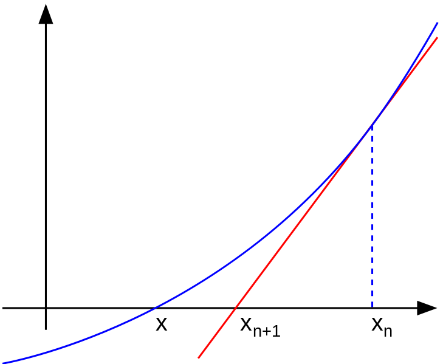

Program Newton Raphson pada Fungsi Non Linear
Metode Newton
Dalam analisis numerik, metode Newton (juga dikenal sebagai metode Newton-Raphson), yang mendapat nama dari Isaac Newton dan Joseph Raphson, merupakan metode yang paling dikenal untuk mencari hampiran terhadap akar fungsi riil . Metode Newton sering konvergen dengan cepat, terutama bila iterasi dimulai "cukup dekat" dengan akar yang diinginkan. Namun bila iterasi dimulai jauh dari akar yang dicari, metode ini dapat meleset tanpa peringatan. Implementasi metode ini biasanya mendeteksi dan mengatasi kegagalan konvergensi.
Newton Raphson adalah Metode pencarian akar suatu fungsi $f(x)$ dengan pendekatan satu titik, dimana fungsi $f(x)$ mempunyai turunan. Metode ini dianggap lebih mudah dari Metode Bagi Dua (Bisection Method) karena metode ini menggunakan pendekatan satu titik sebagai titik awal. Semakin dekat titik awal yang kita pilih dengan akar sebenarnya, maka semakin cepat konvergen ke akarnya.

Prosedur Metode Newton :
menentukan $x_0$ sebagai titik awal, kemudian menarik garis lurus (misal garis $\imath$ ) yang menyinggung titik $f(x_0)$ . Hal ini berakibat garis $\imath$ memotong sumbu $x$ di titik $x_1$ Setelah itu diulangi langkah sebelumnya tapi sekarang $x_1$ dianggap sebagai titik awalnya. Dari mengulang langkah-langkah sebelumnya akan mendapatkan $x_2 , x_3 , ... , x_n$ dengan $x_n$ yang diperoleh adalah bilangan riil yang merupakan akar atau mendekati akar yang sebenarnya.
Perhatikan gambar diatas untuk menurunkan rumus Metode Newton-Raphson
persamaan garis $\imath : y - y_0 = m(x - x_0)$
$$ y - f(x_0) = f'(x_0)(x - x_0) $$
$x_1$ perpotongan garis $\imath$ dengan sumbu - $x$ $$ 0 - f(x_0) = f'(x_0)(x - x_0) $$
$y = 0$ dan $x=x_1$ maka koordinat titik ($x_1$,0) $$ - \frac{f(x_0)}{f'(x_0)} = (x_1 - x_0) $$
sehingga di dapat sebuah rumus :
$$ x_1 = x_0 - \frac{f(x_0)}{f'(x_0)} , x_2 = x_1 - \frac{f(x_1)}{f'(x_1)}, ... , x_n = x_{n-1} - \frac{f(x_{n-1})}{f'(x_{n-1})} $$
Menyusun Algoritma dan Pemrograman Newton Rhapson
dari rumus yang kita dapat diatas kita dapat menyusun sebuah algoritma yang nantinya akan dibuat menjadi sebuah program. Algoritma menyusun akar - akar $f(x) = 0$ sebagai berikut :
- Didefinisikan fungsi $f$ dengan $f(x)$ dan $f'(x)$
- Ditentukan Epsilon sebagai Toleransi kesalahan serta iterasi maksimum untuk Stopping Condition
- Dipilih tebakan awal $x_0$
- Dihitung f($x_0$) dan f'($x_0$)
- Dihitung $x_b = x_0 - \frac{f(x_0)}{f'(x_0)}f'(x_0) \neq 0$ . jika $f'(x_0) = 0$ kembali ke langkah - 3
- Jika $\left | x_b - x_0 \right | < \varepsilon$ . itersasi lebih dari iterasi maksimum tulis $x_{hampiran} = x_b$ sebagai hasil hampiran akar; jika tidak, lanjutkan ke langkah berikutnya.
- Ganti nilai $x_0$ dengan $x_0 = x_b$ dan kembali ke langkah-4
Code Program
dari algoritma diatas , kita dapat menyusun sebuah program seperti berikut.
import math
e = 2.71828
def fungsi(x):
x = float((e**x) - (4*x))
return x
def fungsiturunan(x):
x = float((e**x) - (4))
return x
x = float(input('Masukkan nilai awal = '))
error = float(input('Masukkan nilai error = '))
perulangan = int(input('Masukkan maksimal pengulangan = '))
iterasi = 0
selisih = error+1
while iterasi <= perulangan and selisih>error :
iterasi += 1
f_2 = x - (fungsi(x)/fungsiturunan(x))
selisih = math.fabs(f_2 - x)
x = f_2
print("Iterasi ke = ",iterasi,", x = ",f_2, ", f(",f_2,") = ",fungsi(f_2),", selisih = ",error)
if iterasi <= perulangan:
print("Perulangan Mencapai Batas Maksimal dengan hasil = ", f_2)
else :
print("Toleransi tidak terpenuhi")
Dengan Output sebagai berikut :
Masukkan nilai awal = 0
Masukkan nilai error = 0.0001
Masukkan maksimal pengulangan = 20
Iterasi ke = 1 , x = 0.3333333333333333 , f( 0.3333333333333333 ) = 0.06227877883196098 , selisih = 0.0001
Perulangan Mencapai Batas Maksimal dengan hasil = 0.3333333333333333
Iterasi ke = 2 , x = 0.35724635301940616 , f( 0.35724635301940616 ) = 0.0004022049593612742 , selisih = 0.0001
Perulangan Mencapai Batas Maksimal dengan hasil = 0.35724635301940616
Iterasi ke = 3 , x = 0.35740281572145605 , f( 0.35740281572145605 ) = 1.734656973617632e-08 , selisih = 0.0001
Perulangan Mencapai Batas Maksimal dengan hasil = 0.35740281572145605
Iterasi ke = 4 , x = 0.3574028224700733 , f( 0.3574028224700733 ) = -6.439293542825908e-15 , selisih = 0.0001
Perulangan Mencapai Batas Maksimal dengan hasil = 0.3574028224700733
Penjelasan :
- Importh Library math
- karena kita menggunakan contoh fungsi $f(x) = e^x - 4X$ maka kita membuat sebuah fungsi yang sesuai , dan juga fungsi turunannya yaitu $f'(x) = e^x - 4$
- Membuat sebuah inputan untuk X , Error / Epsilon , serta Maksimal perulangan untuk stopping condition
- lalu deklarasikan iterasi = 0 untuk perulangan yang ke 0 nantinya dan akan ditambah setiap kali perulangan
- deklarasikan selisih untuk $x_b - x_0$ untuk perbandingan
- lakukan perulangan dengan kondisi iterasi kurang dari sama dengan inputan maksimal iterasi dan selisih lebih dari error / epsilon
- hitung $x_b$ dengan rumus yang sudah kita dapatkan sebelumnya
- lalu lakukan perbandingan jika mencapai nilai True maka toleransi tidak terpenuhi namun perulangan sudah mencapai batas
- jika pengecekan selisih > error bernilai bernilai True maka toleransi akan terpenuhi dengan nilai error serta fungsi x pada iterasi ke n